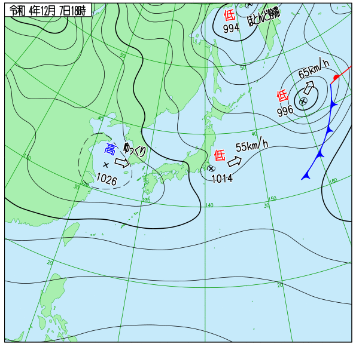

* [2022-12-07 水] ((☔☁ . 雨 時々 くもり 所により 雷 を伴う) (☁☔ . くもり 明け方 まで 雨 所により 雷 を伴う) (☁☔ . くもり 一時 雨))  ** org-mode復帰 12月入ってすぐか。12/4頃、ubuntuのupgradeとかしてたら、 突如、org-modeが使えなくなった。 invalid function: org-assert-version というエラーメッセージが出るように。 org-modeでブログを作成している身としては 厄介だなぁと思ってはいたが、今日調べたら 同様のケースがアップされていた。 https://www.reddit.com/r/emacs/comments/zd3l7p/org_mode_elpa_intall_invalid_function/ M-x package-reinstallしたら確かに回避 出来るようになったが、まだなんかorg-modeと 違うところでエラーが出ている気がする。 とりあえず、復帰出来てホッとした。